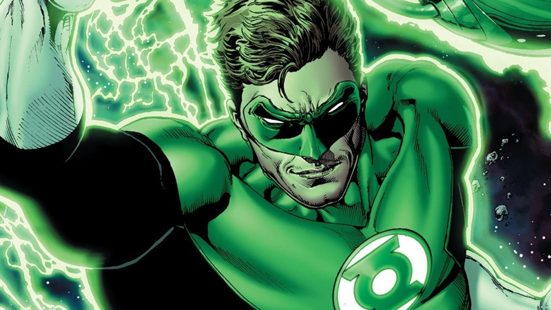

LANTERNA VERDE
Hal Jordan é um piloto de caça, um membro e, ocasionalmente, líder de uma força policial intergaláctica chamada tropa dos Lanternas Verdes, bem como um membro fundador da Liga da Justiça, ao lado de heróis conhecidos como Batman, Superman e Mulher-Maravilha.
Ele luta contra o mal através do universo com um anel que lhe dá uma variedade de superpoderes, mas é geralmente retratado como um dos protetores do Setor 2814, que é o setor onde a Terra reside.
Seus poderes derivam de seu anel de energia e da bateria do Lanterna Verde, que nas mãos de alguém capaz de superar o grande medo permite ao usuário canalizar sua força de vontade para criar todo tipo de construções fantásticas. Jordan usa esse poder para voar, mesmo através do vácuo do espaço, para criar escudos, espadas e lasers, e para construir seu traje de Lanterna Verde, que protege sua identidade secreta em sua vida civil na Terra.
